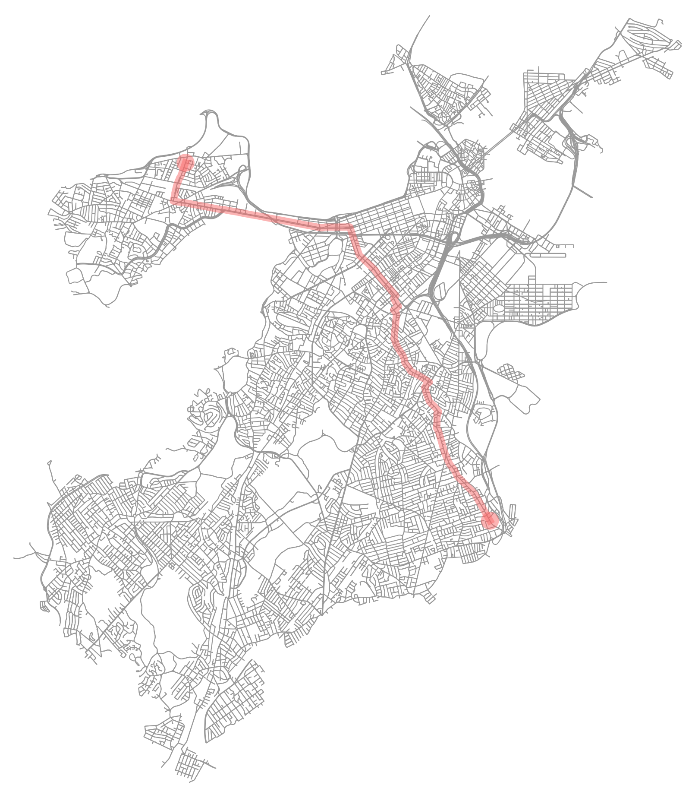

ROUTE POINTS
Source: (42.287856, -71.047196)
Destination: (42.362482, -71.135774)
Total Distance: 13409.8 meters
Route calculated in 1.2 seconds using Bellman-Ford

DIRECTIONS
Travel Northwest for 1302 meters along Neponset Avenue
Slight right onto Adams Street
Travel Northwest for 1253 meters along Adams Street
Turn left onto Winter Street
Travel Northeast for 314 meters along Winter Street
Slight right onto Bowdoin Street
Travel Northeast for 71 meters along Bowdoin Street
Turn right onto Hancock Street
Travel Northwest for 670 meters along Hancock Street
Turn left onto Columbia Road
Travel Northeast for 172 meters along Columbia Road
Turn right onto Dudley Street
Travel Northwest for 1384 meters along Dudley Street
Turn left onto Hampden Street
Travel Northeast for 679 meters along Hampden Street
Slight right onto Albany Street
Travel Northeast for 144 meters along Albany Street
Turn right onto Northampton Street
Travel Northwest for 216 meters along Northampton Street
Turn left onto Harrison Avenue
Travel Northeast for 81 meters along Harrison Avenue
Turn right onto Massachusetts Avenue
Travel Northwest for 1983 meters along Massachusetts Avenue
Turn left onto Commonwealth Avenue
Travel Southwest for 601 meters along Commonwealth Avenue
Slight left onto Beacon Street
Travel Southwest for 79 meters along Beacon Street
Turn right onto Commonwealth Avenue
Travel Northwest for 2258 meters along Commonwealth Avenue
Slight left onto Brighton Avenue
Travel Northwest for 1100 meters along Brighton Avenue
Slight right onto North Beacon Street
Travel Northwest for 145 meters along North Beacon Street
Turn left onto Everett Street
Travel Northeast for 949 meters along Everett Street